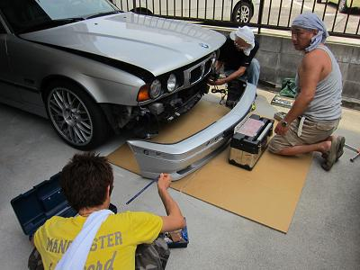
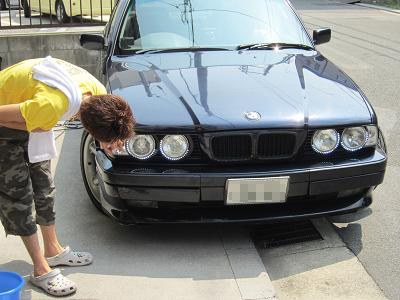
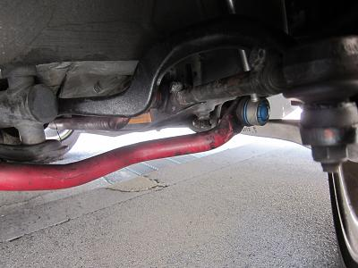
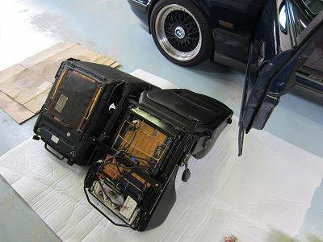
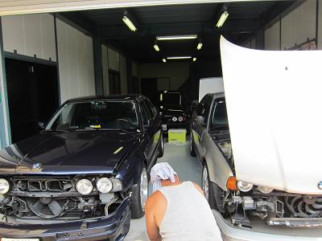
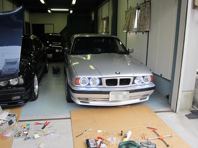

 ライト周りをバラすので、バンパー外しから！ 集団でバンパーを外すのは久しぶりだ（笑 |
  けろよん号は良くある 〇〇□□〇〇 なイカリングですが、アルタァ号は写真の牛ちゃん号のようにLEDを設置するようだ。 そんな牛ちゃん号はスタビをアイバッハに交換して、ハンドリングがクイックになったそうだ。 牛ちゃん号のLEDは点灯させるとかなりの迫力・・・ 知らないとあまり近寄りたくない部類の車（爆 |
 Ｍゴロー号はシートを交換＾＾ |
 アルタァ号もバラし始めています。 〇〇□□〇〇 なイカリングじゃないので、位置決めが重要です！ |
 完成したけろよん号の点灯した図！ デイライトにも使えそうなくらい明るい＾＾！ アルタァさんお世話になりましたm(_~_)m
|